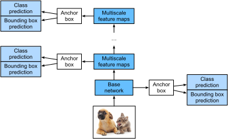

14.7. 单发多框检测¶
在 14.3节–14.6节 中， 我们介绍了边界框、锚框、 多尺度目标检测以及目标检测数据集。 现在，我们已经准备好利用这些背景知识 来设计一个目标检测模型： 单发多框检测（single shot multibox detection， SSD）:cite:Liu.Anguelov.Erhan.ea.2016。 该模型简单、快速，且被广泛使用。 虽然它只是众多目标检测模型之一， 但本节中的一些设计原则 和实现细节 也适用于其他模型。
14.7.1. 模型¶
图14.7.1 给出了 单发多框检测设计的概览。 该模型主要由 一个基础网络 以及随后的 几个多尺度特征图块组成。 基础网络 用于从输入图像中提取特征， 因此它可以使用深度 CNN。 例如， 最初的单发多框检测论文 采用了在分类层之前截断的 VGG 网络 (Liu et al., 2016)， 而 ResNet 也常被使用。 通过我们的设计， 可以使基础网络输出 较大的特征图， 从而生成更多的锚框 来检测较小的目标。 随后， 每个多尺度特征图块 都会将来自前一个块的 特征图的高度和宽度减小（例如减半）， 并使特征图的每个单元 在输入图像上的 感受野增大。
回想一下 14.5节 中 通过深度神经网络对图像 进行逐层表示 来实现多尺度目标检测的设计。 由于 图14.7.1 中越靠近顶部的多尺度特征图越小 但感受野越大， 因此它们适合检测 数量较少但尺寸较大的目标。
简而言之， 单发多框检测通过其基础网络和几个多尺度特征图块， 生成数量不等、大小不同的锚框， 并通过预测这些锚框（从而得到边界框） 的类别和偏移量 来检测大小不同的目标； 因此，它是一个多尺度目标检测模型。

图14.7.1 作为多尺度目标检测模型，单发多框检测主要由一个基础网络和随后的几个多尺度特征图块组成。¶
下面， 我们将描述 图14.7.1 中各个块的实现细节。 首先，我们讨论如何实现类别预测和边界框预测。
14.7.1.1. 类别预测层¶
设目标类别的数量为 \(q\)。 这样，锚框就有 \(q+1\) 个类别， 其中类别 0 是背景。 在某个尺度下， 假设特征图的高度和宽度 分别为 \(h\) 和 \(w\)。 当以这些特征图的 每个空间位置为中心 生成 \(a\) 个锚框时， 共有 \(hwa\) 个锚框需要分类。 由于参数化成本可能很高， 这往往使基于全连接层的分类不可行。 回想一下我们在 8.3节 中 是如何利用卷积层的通道 来预测类别的。 单发多框检测使用 同样的技术来降低模型复杂度。
具体地说， 类别预测层使用一个不改变 特征图宽度和高度的卷积层。 这样，在特征图相同的空间维度 （宽度和高度）上， 输出和输入之间就可以 一一对应。 更具体地说， 输出特征图在任意空间位置（\(x\)，\(y\)） 处的通道，表示以输入特征图的 （\(x\)，\(y\)）为中心的所有锚框的 类别预测。 为了产生有效的预测， 必须有 \(a(q+1)\) 个输出通道， 其中对于同一空间位置， 索引为 \(i(q+1) + j\) 的输出通道 表示锚框 \(i\)（\(0 \leq i < a\)） 属于类别 \(j\)（\(0 \leq j \leq q\)）的预测。
下面我们定义这样一个类别预测层， 分别通过参数 num_anchors 和
num_classes 指定 \(a\) 和 \(q\)。 该层使用填充为 1 的
\(3\times3\) 卷积层。 该卷积层输入和输出的 宽度与高度保持不变。
%matplotlib inline
import torch
import torchvision
from torch import nn
from torch.nn import functional as F
from d2l import torch as d2l
def cls_predictor(num_inputs, num_anchors, num_classes):
return nn.Conv2d(num_inputs, num_anchors * (num_classes + 1),
kernel_size=3, padding=1)
%matplotlib inline
from mxnet import autograd, gluon, image, init, np, npx
from mxnet.gluon import nn
from d2l import mxnet as d2l
npx.set_np()
def cls_predictor(num_anchors, num_classes):
return nn.Conv2D(num_anchors * (num_classes + 1), kernel_size=3,
padding=1)
14.7.1.2. 边界框预测层¶
边界框预测层的设计与类别预测层类似。 唯一的区别在于每个锚框的输出数量： 这里我们需要预测四个偏移量，而不是 \(q+1\) 个类别。
def bbox_predictor(num_inputs, num_anchors):
return nn.Conv2d(num_inputs, num_anchors * 4, kernel_size=3, padding=1)
def bbox_predictor(num_anchors):
return nn.Conv2D(num_anchors * 4, kernel_size=3, padding=1)
14.7.1.3. 连结多尺度的预测¶
正如我们提到的，单发多框检测 使用多尺度特征图来生成锚框并预测它们的类别和偏移量。 在不同尺度下， 特征图的形状 或者以同一单元为中心的锚框数量 可能不同。 因此， 不同尺度下预测输出的 形状可能不同。
在下面的例子中， 我们为同一个小批量构造两个不同尺度的特征图 Y1 和
Y2， 其中 Y2 的高度和宽度 是 Y1 的一半。
让我们以类别预测为例。 假设 在 Y1 和 Y2 中每个单元 分别生成 5
个和 3 个锚框。 再假设 目标类别的数量为 10。 对于特征图 Y1 和
Y2， 类别预测输出的通道数 分别为 \(5\times(10+1)=55\) 和
\(3\times(10+1)=33\)， 其中任一输出形状都是
（批量大小，通道数，高度，宽度）。
def forward(x, block):
return block(x)
Y1 = forward(torch.zeros((2, 8, 20, 20)), cls_predictor(8, 5, 10))
Y2 = forward(torch.zeros((2, 16, 10, 10)), cls_predictor(16, 3, 10))
Y1.shape, Y2.shape
def forward(x, block):
block.initialize()
return block(x)
Y1 = forward(np.zeros((2, 8, 20, 20)), cls_predictor(5, 10))
Y2 = forward(np.zeros((2, 16, 10, 10)), cls_predictor(3, 10))
Y1.shape, Y2.shape
正如我们所看到的，除了批量大小这一维之外， 其余三个维度的大小都不同。 为了更高效地计算， 我们将把这两个预测输出连结起来， 为此需要将这些张量变换为更一致的格式。
请注意， 通道维保存的是 中心相同的锚框的预测。 我们首先把这一维移到最内层。 由于不同尺度下的批量大小相同， 我们可以把预测输出 变换为一个二维张量， 其形状为（批量大小，高度 \(\times\) 宽度 \(\times\) 通道数）。 然后，我们就可以沿维度 1 把不同尺度下的这类输出连结起来。
def flatten_pred(pred):
return torch.flatten(pred.permute(0, 2, 3, 1), start_dim=1)
def concat_preds(preds):
return torch.cat([flatten_pred(p) for p in preds], dim=1)
def flatten_pred(pred):
return npx.batch_flatten(pred.transpose(0, 2, 3, 1))
def concat_preds(preds):
return np.concatenate([flatten_pred(p) for p in preds], axis=1)
这样一来， 即使 Y1 和 Y2 在通道数、高度和宽度上 大小不同，
我们仍然可以把同一小批量下 两个不同尺度的预测输出连结起来。
concat_preds([Y1, Y2]).shape
concat_preds([Y1, Y2]).shape
14.7.1.4. 下采样块¶
为了在多个尺度上检测目标， 我们定义下面的下采样块
down_sample_blk， 它将输入特征图的高度和宽度减半。 事实上，
该块采用了 8.2.1节 中 VGG 块的设计。 更具体地说，
每个下采样块由 两个填充为 1 的 \(3\times3\) 卷积层
以及随后的一个步幅为 2 的 \(2\times2\) 最大汇聚层组成。
众所周知，填充为 1 的 \(3\times3\) 卷积层不改变特征图的形状。
然而，随后的 \(2\times2\) 最大汇聚会将输入特征图的高度和宽度减半。
对于该下采样块的输入和输出特征图， 由于
\(1\times 2+(3-1)+(3-1)=6\)， 输出中的每个单元 在输入上具有
\(6\times6\) 的感受野。
因此，下采样块增大了其输出特征图中每个单元的感受野。
def down_sample_blk(in_channels, out_channels):
blk = []
for _ in range(2):
blk.append(nn.Conv2d(in_channels, out_channels,
kernel_size=3, padding=1))
blk.append(nn.BatchNorm2d(out_channels))
blk.append(nn.ReLU())
in_channels = out_channels
blk.append(nn.MaxPool2d(2))
return nn.Sequential(*blk)
def down_sample_blk(num_channels):
blk = nn.Sequential()
for _ in range(2):
blk.add(nn.Conv2D(num_channels, kernel_size=3, padding=1),
nn.BatchNorm(in_channels=num_channels),
nn.Activation('relu'))
blk.add(nn.MaxPool2D(2))
return blk
在下面的例子中，我们构造的下采样块改变了输入通道数，并将输入特征图的高度和宽度减半。
forward(torch.zeros((2, 3, 20, 20)), down_sample_blk(3, 10)).shape
forward(np.zeros((2, 3, 20, 20)), down_sample_blk(10)).shape
14.7.1.5. 基础网络块¶
基础网络块用于从输入图像中提取特征。 为了简单起见， 我们构造一个小型基础网络， 它由三个下采样块组成， 每个块都会将通道数加倍。 给定一幅 \(256\times256\) 的输入图像， 该基础网络块输出 \(32 \times 32\) 的特征图（\(256/2^3=32\)）。
def base_net():
blk = []
num_filters = [3, 16, 32, 64]
for i in range(len(num_filters) - 1):
blk.append(down_sample_blk(num_filters[i], num_filters[i+1]))
return nn.Sequential(*blk)
forward(torch.zeros((2, 3, 256, 256)), base_net()).shape
def base_net():
blk = nn.Sequential()
for num_filters in [16, 32, 64]:
blk.add(down_sample_blk(num_filters))
return blk
forward(np.zeros((2, 3, 256, 256)), base_net()).shape
14.7.1.6. 完整模型¶
完整的单发多框检测模型 由五个块组成。 每个块产生的特征图 既用于 (i) 生成锚框， 也用于 (ii) 预测这些锚框的类别和偏移量。 在这五个块中， 第一个 是基础网络块， 第二个到第四个是 下采样块， 最后一个块 使用全局最大汇聚 将高度和宽度都减小到 1。 从技术上说， 第二个到第五个块 都是 图14.7.1 中的 多尺度特征图块。
def get_blk(i):
if i == 0:
blk = base_net()
elif i == 1:
blk = down_sample_blk(64, 128)
elif i == 4:
blk = nn.AdaptiveMaxPool2d((1,1))
else:
blk = down_sample_blk(128, 128)
return blk
def get_blk(i):
if i == 0:
blk = base_net()
elif i == 4:
blk = nn.GlobalMaxPool2D()
else:
blk = down_sample_blk(128)
return blk
现在，我们为每个块定义前向传播。 与图像分类任务不同， 这里的输出包括 (i)
CNN 特征图 Y， (ii) 在当前尺度下使用 Y 生成的锚框， 以及 (iii)
基于 Y 为这些锚框预测的类别和偏移量。
def blk_forward(X, blk, size, ratio, cls_predictor, bbox_predictor):
Y = blk(X)
anchors = d2l.multibox_prior(Y, sizes=size, ratios=ratio)
cls_preds = cls_predictor(Y)
bbox_preds = bbox_predictor(Y)
return (Y, anchors, cls_preds, bbox_preds)
def blk_forward(X, blk, size, ratio, cls_predictor, bbox_predictor):
Y = blk(X)
anchors = d2l.multibox_prior(Y, sizes=size, ratios=ratio)
cls_preds = cls_predictor(Y)
bbox_preds = bbox_predictor(Y)
return (Y, anchors, cls_preds, bbox_preds)
回想一下， 在 图14.7.1 中 越靠近顶部的多尺度特征图块
用于检测较大的目标； 因此，它需要生成较大的锚框。 在上述前向传播中，
在每个多尺度特征图块处， 我们通过所调用的 multibox_prior 函数 （见
14.4节）的 sizes 参数
传入一个包含两个尺度值的列表。 在下面， 区间 0.2 到 1.05
被均匀地分成五段， 以确定五个块中较小的尺度值：0.2、0.37、0.54、0.71 和
0.88。 然后，它们较大的尺度值 由
\(\sqrt{0.2 \times 0.37} = 0.272\)、\(\sqrt{0.37 \times 0.54} = 0.447\)
等给出。
sizes = [[0.2, 0.272], [0.37, 0.447], [0.54, 0.619], [0.71, 0.79],
[0.88, 0.961]]
ratios = [[1, 2, 0.5]] * 5
num_anchors = len(sizes[0]) + len(ratios[0]) - 1
sizes = [[0.2, 0.272], [0.37, 0.447], [0.54, 0.619], [0.71, 0.79],
[0.88, 0.961]]
ratios = [[1, 2, 0.5]] * 5
num_anchors = len(sizes[0]) + len(ratios[0]) - 1
现在，我们可以如下定义完整模型 TinySSD。
class TinySSD(nn.Module):
def __init__(self, num_classes, **kwargs):
super(TinySSD, self).__init__(**kwargs)
self.num_classes = num_classes
idx_to_in_channels = [64, 128, 128, 128, 128]
for i in range(5):
# Equivalent to the assignment statement `self.blk_i = get_blk(i)`
setattr(self, f'blk_{i}', get_blk(i))
setattr(self, f'cls_{i}', cls_predictor(idx_to_in_channels[i],
num_anchors, num_classes))
setattr(self, f'bbox_{i}', bbox_predictor(idx_to_in_channels[i],
num_anchors))
def forward(self, X):
anchors, cls_preds, bbox_preds = [None] * 5, [None] * 5, [None] * 5
for i in range(5):
# Here `getattr(self, 'blk_%d' % i)` accesses `self.blk_i`
X, anchors[i], cls_preds[i], bbox_preds[i] = blk_forward(
X, getattr(self, f'blk_{i}'), sizes[i], ratios[i],
getattr(self, f'cls_{i}'), getattr(self, f'bbox_{i}'))
anchors = torch.cat(anchors, dim=1)
cls_preds = concat_preds(cls_preds)
cls_preds = cls_preds.reshape(
cls_preds.shape[0], -1, self.num_classes + 1)
bbox_preds = concat_preds(bbox_preds)
return anchors, cls_preds, bbox_preds
class TinySSD(nn.Block):
def __init__(self, num_classes, **kwargs):
super(TinySSD, self).__init__(**kwargs)
self.num_classes = num_classes
for i in range(5):
# Equivalent to the assignment statement `self.blk_i = get_blk(i)`
setattr(self, f'blk_{i}', get_blk(i))
setattr(self, f'cls_{i}', cls_predictor(num_anchors, num_classes))
setattr(self, f'bbox_{i}', bbox_predictor(num_anchors))
def forward(self, X):
anchors, cls_preds, bbox_preds = [None] * 5, [None] * 5, [None] * 5
for i in range(5):
# Here `getattr(self, 'blk_%d' % i)` accesses `self.blk_i`
X, anchors[i], cls_preds[i], bbox_preds[i] = blk_forward(
X, getattr(self, f'blk_{i}'), sizes[i], ratios[i],
getattr(self, f'cls_{i}'), getattr(self, f'bbox_{i}'))
anchors = np.concatenate(anchors, axis=1)
cls_preds = concat_preds(cls_preds)
cls_preds = cls_preds.reshape(
cls_preds.shape[0], -1, self.num_classes + 1)
bbox_preds = concat_preds(bbox_preds)
return anchors, cls_preds, bbox_preds
我们创建一个模型实例， 并用它在一个小批量的 \(256 \times 256\) 图像
X 上执行前向传播。
如本节前面所示， 第一个块输出 \(32 \times 32\) 的特征图。 回想一下， 第二个到第四个下采样块 将高度和宽度减半， 而第五个块使用全局汇聚。 由于沿特征图的空间维度 为每个单元生成 4 个锚框， 因此在全部五个尺度下， 每幅图像总共生成 \((32^2 + 16^2 + 8^2 + 4^2 + 1)\times 4 = 5444\) 个锚框。
net = TinySSD(num_classes=1)
X = torch.zeros((32, 3, 256, 256))
anchors, cls_preds, bbox_preds = net(X)
print('output anchors:', anchors.shape)
print('output class preds:', cls_preds.shape)
print('output bbox preds:', bbox_preds.shape)
net = TinySSD(num_classes=1)
net.initialize()
X = np.zeros((32, 3, 256, 256))
anchors, cls_preds, bbox_preds = net(X)
print('output anchors:', anchors.shape)
print('output class preds:', cls_preds.shape)
print('output bbox preds:', bbox_preds.shape)
14.7.2. 训练¶
现在，我们将解释 如何训练单发多框检测模型 来进行目标检测。
14.7.2.1. 读取数据集并初始化模型¶
首先，让我们读取香蕉检测数据集， 该数据集已在 14.6节 中介绍。
batch_size = 32
train_iter, _ = d2l.load_data_bananas(batch_size)
batch_size = 32
train_iter, _ = d2l.load_data_bananas(batch_size)
香蕉检测数据集中只有一个类别。定义模型后， 我们需要初始化其参数并定义 优化算法。
device, net = d2l.try_gpu(), TinySSD(num_classes=1)
trainer = torch.optim.SGD(net.parameters(), lr=0.2, weight_decay=5e-4)
device, net = d2l.try_gpu(), TinySSD(num_classes=1)
net.initialize(init=init.Xavier(), ctx=device)
trainer = gluon.Trainer(net.collect_params(), 'sgd',
{'learning_rate': 0.2, 'wd': 5e-4})
14.7.2.2. 定义损失函数和评价函数¶
目标检测有两类损失。 第一类损失与锚框的类别有关： 它的计算 可以直接复用
我们用于图像分类的 交叉熵损失函数。 第二类损失
与正（非背景）锚框的偏移量有关： 这是一个回归问题。
然而，对于这个回归问题， 这里我们不使用
3.1.3节
中描述的平方损失。 相反， 我们使用 \(\ell_1\) 范数损失，
即预测值与真实值之差的绝对值。 掩码变量 bbox_masks 在损失计算中
过滤掉负锚框和非法（填充的） 锚框。 最后，我们将 锚框类别损失
和锚框偏移量损失相加， 得到模型的损失函数。
cls_loss = nn.CrossEntropyLoss(reduction='none')
bbox_loss = nn.L1Loss(reduction='none')
def calc_loss(cls_preds, cls_labels, bbox_preds, bbox_labels, bbox_masks):
batch_size, num_classes = cls_preds.shape[0], cls_preds.shape[2]
cls = cls_loss(cls_preds.reshape(-1, num_classes),
cls_labels.reshape(-1)).reshape(batch_size, -1).mean(dim=1)
bbox = bbox_loss(bbox_preds * bbox_masks,
bbox_labels * bbox_masks).mean(dim=1)
return cls + bbox
cls_loss = gluon.loss.SoftmaxCrossEntropyLoss()
bbox_loss = gluon.loss.L1Loss()
def calc_loss(cls_preds, cls_labels, bbox_preds, bbox_labels, bbox_masks):
cls = cls_loss(cls_preds, cls_labels)
bbox = bbox_loss(bbox_preds * bbox_masks, bbox_labels * bbox_masks)
return cls + bbox
我们可以使用准确率来评价分类结果。 由于对偏移量使用了 \(\ell_1\) 范数损失， 我们使用平均绝对误差（mean absolute error） 来评价预测的边界框。 这些预测结果 由生成的锚框 及其预测偏移量得到。
def cls_eval(cls_preds, cls_labels):
# Because the class prediction results are on the final dimension,
# `argmax` needs to specify this dimension
return float((cls_preds.argmax(dim=-1).type(
cls_labels.dtype) == cls_labels).sum())
def bbox_eval(bbox_preds, bbox_labels, bbox_masks):
return float((torch.abs((bbox_labels - bbox_preds) * bbox_masks)).sum())
def cls_eval(cls_preds, cls_labels):
# Because the class prediction results are on the final dimension,
# `argmax` needs to specify this dimension
return float((cls_preds.argmax(axis=-1).astype(
cls_labels.dtype) == cls_labels).sum())
def bbox_eval(bbox_preds, bbox_labels, bbox_masks):
return float((np.abs((bbox_labels - bbox_preds) * bbox_masks)).sum())
14.7.2.3. 训练模型¶
训练模型时， 我们需要在前向传播中生成多尺度锚框（anchors），
并预测它们的类别（cls_preds）和偏移量（bbox_preds）。
然后，我们根据标签信息 Y
为这样生成的锚框标注类别（cls_labels）和偏移量（bbox_labels）。
最后，我们利用类别和偏移量的 预测值和标注值 计算损失函数。
为了使实现保持简洁， 这里省略了测试数据集的评价。
num_epochs, timer = 20, d2l.Timer()
animator = d2l.Animator(xlabel='epoch', xlim=[1, num_epochs],
legend=['class error', 'bbox mae'])
net = net.to(device)
for epoch in range(num_epochs):
# Sum of training accuracy, no. of examples in sum of training accuracy,
# Sum of absolute error, no. of examples in sum of absolute error
metric = d2l.Accumulator(4)
net.train()
for features, target in train_iter:
timer.start()
trainer.zero_grad()
X, Y = features.to(device), target.to(device)
# Generate multiscale anchor boxes and predict their classes and
# offsets
anchors, cls_preds, bbox_preds = net(X)
# Label the classes and offsets of these anchor boxes
bbox_labels, bbox_masks, cls_labels = d2l.multibox_target(anchors, Y)
# Calculate the loss function using the predicted and labeled values
# of the classes and offsets
l = calc_loss(cls_preds, cls_labels, bbox_preds, bbox_labels,
bbox_masks)
l.mean().backward()
trainer.step()
metric.add(cls_eval(cls_preds, cls_labels), cls_labels.numel(),
bbox_eval(bbox_preds, bbox_labels, bbox_masks),
bbox_labels.numel())
cls_err, bbox_mae = 1 - metric[0] / metric[1], metric[2] / metric[3]
animator.add(epoch + 1, (cls_err, bbox_mae))
print(f'class err {cls_err:.2e}, bbox mae {bbox_mae:.2e}')
print(f'{len(train_iter.dataset) / timer.stop():.1f} examples/sec on '
f'{str(device)}')
num_epochs, timer = 20, d2l.Timer()
animator = d2l.Animator(xlabel='epoch', xlim=[1, num_epochs],
legend=['class error', 'bbox mae'])
for epoch in range(num_epochs):
# Sum of training accuracy, no. of examples in sum of training accuracy,
# Sum of absolute error, no. of examples in sum of absolute error
metric = d2l.Accumulator(4)
for features, target in train_iter:
timer.start()
X = features.as_in_ctx(device)
Y = target.as_in_ctx(device)
with autograd.record():
# Generate multiscale anchor boxes and predict their classes and
# offsets
anchors, cls_preds, bbox_preds = net(X)
# Label the classes and offsets of these anchor boxes
bbox_labels, bbox_masks, cls_labels = d2l.multibox_target(anchors,
Y)
# Calculate the loss function using the predicted and labeled
# values of the classes and offsets
l = calc_loss(cls_preds, cls_labels, bbox_preds, bbox_labels,
bbox_masks)
l.backward()
trainer.step(batch_size)
metric.add(cls_eval(cls_preds, cls_labels), cls_labels.size,
bbox_eval(bbox_preds, bbox_labels, bbox_masks),
bbox_labels.size)
cls_err, bbox_mae = 1 - metric[0] / metric[1], metric[2] / metric[3]
animator.add(epoch + 1, (cls_err, bbox_mae))
print(f'class err {cls_err:.2e}, bbox mae {bbox_mae:.2e}')
print(f'{len(train_iter._dataset) / timer.stop():.1f} examples/sec on '
f'{str(device)}')
14.7.3. 预测¶
在预测时， 目标是在图像上 检测所有感兴趣的目标。 下面 我们读取并调整一幅测试图像的大小， 将其转换为 卷积层所需的 四维张量。
X = torchvision.io.read_image('../img/banana.jpg').unsqueeze(0).float()
img = X.squeeze(0).permute(1, 2, 0).long()
img = image.imread('../img/banana.jpg')
feature = image.imresize(img, 256, 256).astype('float32')
X = np.expand_dims(feature.transpose(2, 0, 1), axis=0)
使用下面的 multibox_detection 函数， 可以由锚框及其预测偏移量
得到预测的边界框。 然后使用非极大值抑制 来移除相似的预测边界框。
def predict(X):
net.eval()
anchors, cls_preds, bbox_preds = net(X.to(device))
cls_probs = F.softmax(cls_preds, dim=2).permute(0, 2, 1)
output = d2l.multibox_detection(cls_probs, bbox_preds, anchors)
idx = [i for i, row in enumerate(output[0]) if row[0] != -1]
return output[0, idx]
output = predict(X)
def predict(X):
anchors, cls_preds, bbox_preds = net(X.as_in_ctx(device))
cls_probs = npx.softmax(cls_preds).transpose(0, 2, 1)
output = d2l.multibox_detection(cls_probs, bbox_preds, anchors)
idx = [i for i, row in enumerate(output[0]) if row[0] != -1]
return output[0, idx]
output = predict(X)
最后，我们显示 所有置信度不低于 0.9 的预测边界框 作为输出。
def display(img, output, threshold):
d2l.set_figsize((5, 5))
fig = d2l.plt.imshow(img)
for row in output:
score = float(row[1])
if score < threshold:
continue
h, w = img.shape[:2]
bbox = [row[2:6] * torch.tensor((w, h, w, h), device=row.device)]
d2l.show_bboxes(fig.axes, bbox, '%.2f' % score, 'w')
display(img, output.cpu(), threshold=0.9)
def display(img, output, threshold):
d2l.set_figsize((5, 5))
fig = d2l.plt.imshow(img.asnumpy())
for row in output:
score = float(row[1])
if score < threshold:
continue
h, w = img.shape[:2]
bbox = [row[2:6] * np.array((w, h, w, h), ctx=row.ctx)]
d2l.show_bboxes(fig.axes, bbox, '%.2f' % score, 'w')
display(img, output, threshold=0.9)
14.7.4. 小结¶
单发多框检测是一种多尺度目标检测模型。通过其基础网络和几个多尺度特征图块，单发多框检测生成数量不等、大小不同的锚框，并通过预测这些锚框（从而得到边界框）的类别和偏移量来检测大小不同的目标。
训练单发多框检测模型时，损失函数根据锚框类别和偏移量的预测值与标注值来计算。
14.7.5. 练习¶
你能通过改进损失函数来改进单发多框检测吗？例如，对预测的偏移量使用平滑 \(\ell_1\) 范数损失来代替 \(\ell_1\) 范数损失。该损失函数在零附近使用平方函数以获得平滑性，由超参数 \(\sigma\) 控制：
当 \(\sigma\) 非常大时，该损失与 \(\ell_1\) 范数损失类似。当其值较小时，损失函数更平滑。
def smooth_l1(data, scalar):
out = []
for i in data:
if abs(i) < 1 / (scalar ** 2):
out.append(((scalar * i) ** 2) / 2)
else:
out.append(abs(i) - 0.5 / (scalar ** 2))
return torch.tensor(out)
sigmas = [10, 1, 0.5]
lines = ['-', '--', '-.']
x = torch.arange(-2, 2, 0.1)
d2l.set_figsize()
for l, s in zip(lines, sigmas):
y = smooth_l1(x, scalar=s)
d2l.plt.plot(x, y, l, label='sigma=%.1f' % s)
d2l.plt.legend();
sigmas = [10, 1, 0.5]
lines = ['-', '--', '-.']
x = np.arange(-2, 2, 0.1)
d2l.set_figsize()
for l, s in zip(lines, sigmas):
y = npx.smooth_l1(x, scalar=s)
d2l.plt.plot(x.asnumpy(), y.asnumpy(), l, label='sigma=%.1f' % s)
d2l.plt.legend();
此外，在实验中，我们对类别预测使用了交叉熵损失： 设 \(p_j\) 为对真实类别 \(j\) 的预测概率，交叉熵损失为 \(-\log p_j\)。我们也可以使用焦点损失（focal loss） (Lin et al., 2017)：给定超参数 \(\gamma > 0\) 和 \(\alpha > 0\)，该损失定义为：
正如我们所看到的，增大 \(\gamma\) 可以有效降低分类良好样例（例如 \(p_j > 0.5\)）的相对损失， 从而使训练 更关注那些被错误分类的困难样例。
def focal_loss(gamma, x):
return -(1 - x) ** gamma * torch.log(x)
x = torch.arange(0.01, 1, 0.01)
for l, gamma in zip(lines, [0, 1, 5]):
y = d2l.plt.plot(x, focal_loss(gamma, x), l, label='gamma=%.1f' % gamma)
d2l.plt.legend();
def focal_loss(gamma, x):
return -(1 - x) ** gamma * np.log(x)
x = np.arange(0.01, 1, 0.01)
for l, gamma in zip(lines, [0, 1, 5]):
y = d2l.plt.plot(x.asnumpy(), focal_loss(gamma, x).asnumpy(), l,
label='gamma=%.1f' % gamma)
d2l.plt.legend();
由于篇幅限制，我们省略了本节中单发多框检测模型的一些实现细节。你能从以下几个方面进一步改进该模型吗：
当目标相对于图像小得多时，模型可以将输入图像调整得更大。
通常存在数量庞大的负锚框。为了使类别分布更均衡，我们可以对负锚框进行下采样。
在损失函数中，为类别损失和偏移量损失分配不同的权重超参数。
使用其他方法评价目标检测模型，例如单发多框检测论文 (Liu et al., 2016) 中的方法。